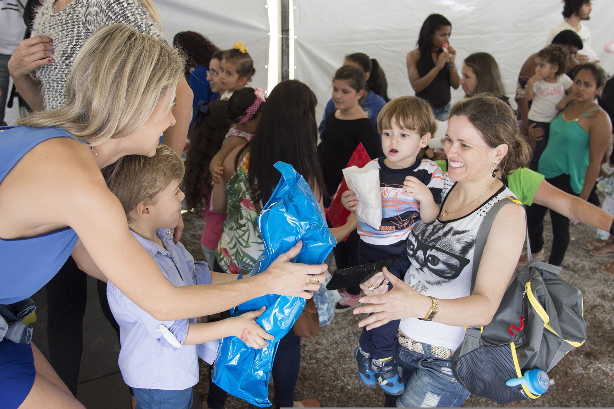

Encontrar causas com facilidade
Moradores podem descobrir causas sociais de forma simples, organizada e acessivel.
Por que esse projeto importa?
Cada ONG carrega uma causa que merece ser vista, lembrada e apoiada. Ao fazer parte dessa vitrine, sua instituição amplia sua presença, aproxima pessoas do seu propósito e fortalece o impacto social que já realiza na cidade.
As ONGs passam a ser encontradas com mais facilidade pela populacao.
Moradores podem descobrir causas sociais de forma simples, organizada e acessivel.
Pessoas dispostas a ajudar conseguem encontrar ONGs com as quais se identificam.
Uma apresentacao clara transmite mais seriedade, confianca e profissionalismo.
O site aproxima instituicoes, moradores e apoiadores em um so lugar.
Empresas podem encontrar iniciativas locais para apoiar, participar e se conectar.
Dados importantes das ONGs ficam reunidos de forma acessivel e padronizada.
O projeto destaca o trabalho social da cidade e incentiva maior participacao.
Maior visibilidade
Muitas ONGs realizam trabalhos importantes todos os dias, mas acabam sendo pouco conhecidas pela populacao. Estar presente em uma vitrine digital ajuda sua instituicao a ganhar mais reconhecimento, alcancar novos publicos e mostrar com clareza a causa que defende.

Sua ONG passa a ter um espaco proprio para apresentar sua historia, missao, projetos e formas de atuacao.
As informacoes ficam reunidas em um ambiente acessivel, facilitando que moradores encontrem e entendam o trabalho da instituicao.
A vitrine ajuda a valorizar as acoes sociais que muitas vezes acontecem longe dos olhos da comunidade.
Com maior visibilidade, sua ONG pode ser descoberta por voluntarios, apoiadores, empresas e pessoas interessadas em contribuir.